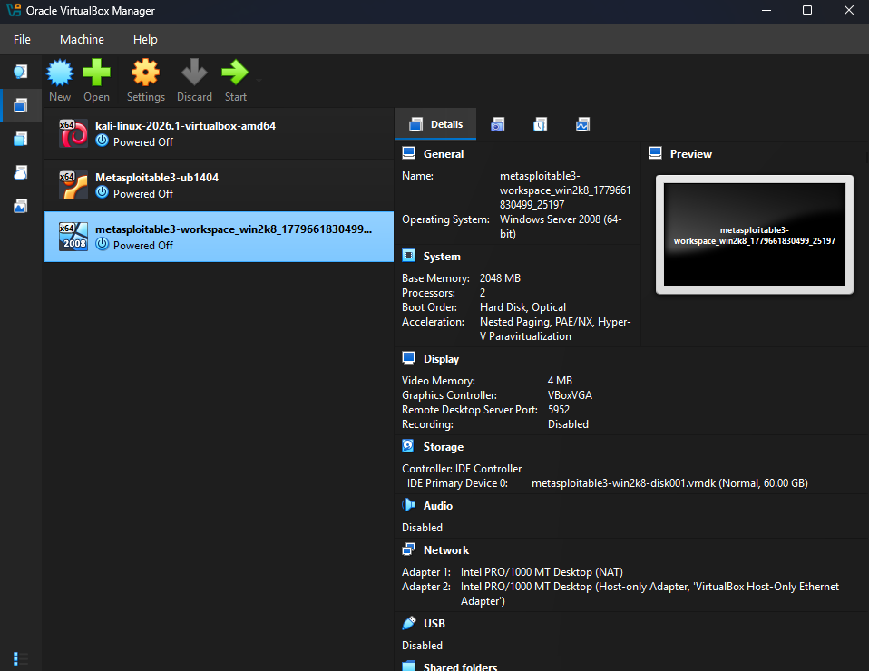
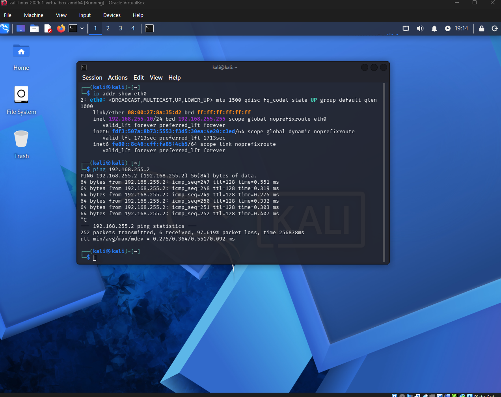
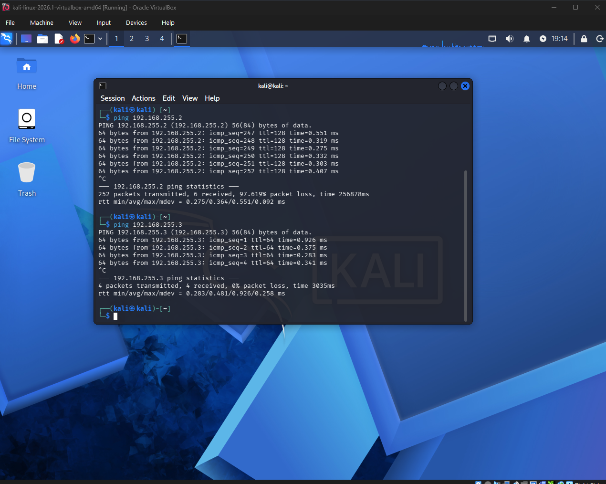

This lab was just getting the environment running: three VMs in VirtualBox on the same host-only network, a Kali box, a Metasploitable Windows Server 2008 target, and a Metasploitable Ubuntu target. Once they were up I confirmed Kali could reach both targets with a ping before doing anything else.


